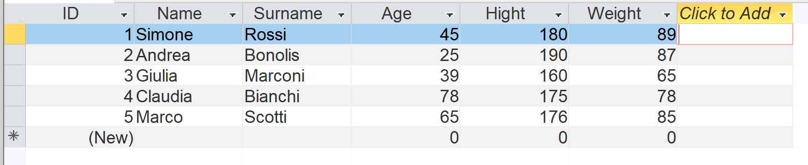

Spiegare i concetti di dataset e distribuzione, creare un dataset in un DBMS (Access),
calcolare fino a 3 distribuzioni univariate e almeno una distribuzione bivariata.
Qui ho usato come esempio la tabella People con i campi: ID, Name, Surname, Age, Height, Weight.
Dataset (snapshot)

Query SQL utilizzate
Qui trovi le query che ho eseguito in Access per ottenere le distribuzioni univariate e la bivariata.
Distribuzione univariata (Age)
SELECT Age, COUNT(*) AS Frequency
FROM People
GROUP BY Age;
Distribuzione univariata (Height)
SELECT Height, COUNT(*) AS Frequency
FROM People
GROUP BY Height;
Distribuzione univariata (Weight)
SELECT Weight, COUNT(*) AS Frequency
FROM People
GROUP BY Weight;
Distribuzione bivariata (Height vs Weight)
SELECT Height, Weight, COUNT(*) AS Frequency
FROM People
GROUP BY Height, Weight;
Risultati (inserisci qui i dati reali)
Per mostrare il lavoro nel blog, copia qui i risultati ottenuti da Access nelle relative tabelle HTML. Esempi con dati fittizi:
Distribuzione - Age
Age
Frequency
25
1
45
1
55
1
65
1
78
1
Distribuzione - Height
Height
Frequency
175
1
180
3
190
1
Distribuzione - Weight
Weight
Frequency
65
2
78
1
85
1
87
1
Interpretazione (esempio)
Dalla distribuzione univariata delle età si vede che i valori sono distribuiti tra 25 e 78 anni (campione piccolo).
La distribuzione di altezza e peso mostra la varietà del campione; la bivariata (altezza vs peso) permette di verificare se esistono combinazioni ricorrenti.